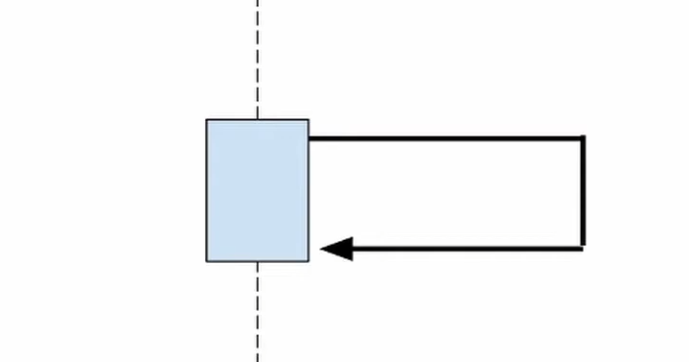
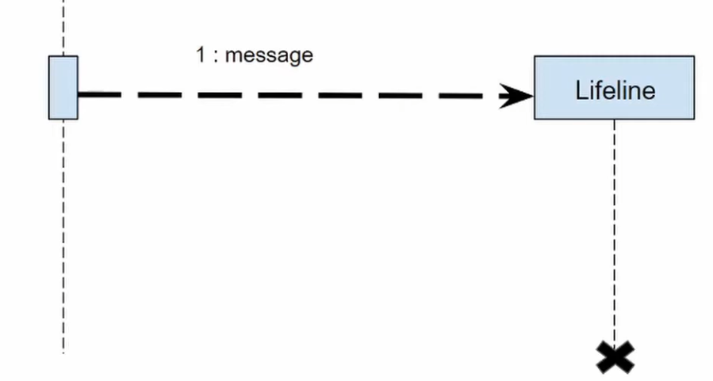
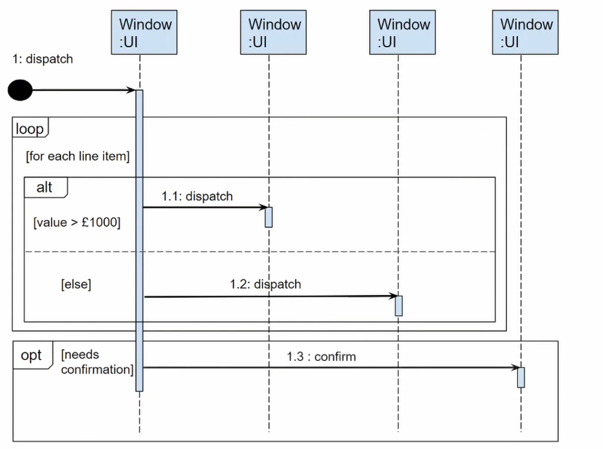

UML 序列图
术语对照表
| 中文 | 英文 |
|---|---|
| 序列图 | Sequence Diagram |
| 对象 | Object |
| 生命线 | Lifeline |
| 激活框 | Activation Box |
| 消息 | Message |
| 同步消息 | Synchronous Message |
| 异步消息 | Asynchronous Message |
| 返回消息 | Return Message |
| 自调用 | Self Message |
| 创建消息 | Create Message |
| 销毁消息 | Destroy Message |
| 组合片段 | Combined Fragment |
| 交互框架 | Interaction Frame |
1 目标
设计 UML 序列图往往出于以下的目标：
- 展示对象交互：清晰地展示系统中对象之间的交互顺序和时序。
- 描述消息流：明确对象之间如何通过消息进行通信。
- 理解系统行为：帮助理解特定场景下系统的动态行为。
- 设计时序逻辑：辅助设计和验证系统的时序逻辑和调用关系。
- 文档化交互过程：为开发和维护提供清晰的交互文档。
2 组成
序列图主要由以下几个元素组成：
2.1 对象和生命线
- 对象（Object）：
- 定义：表示参与交互的实体，可以是类的实例、参与者或系统组件。
- 表示：用矩形框表示，格式为
对象名:类名。 - 生命线（Lifeline）：
- 定义：表示对象在时间序列中的存在。
- 表示：从对象框向下延伸的垂直虚线。
2.2 激活框
- 激活框（Activation Box）：
- 定义：表示对象执行操作或处于活动状态的时间段。
- 表示：在生命线上用细长的矩形表示。
生命线和激活框示例
当对象正在执行某个操作或处理某个消息时，在其生命线上显示一个激活框。激活框的高度表示执行的时长。

2.3 消息类型
- 同步消息（Synchronous Message）：
- 定义：发送者发送消息后，必须等待接收者处理完毕并返回结果。
- 表示：用实线箭头（箭头为实心三角形）连接两个对象。
- 特点：阻塞调用，调用方需要等待响应。
同步消息示例
典型的方法调用就是同步消息。例如，客户端调用服务器的某个方法，必须等待服务器返回结果才能继续执行。

- 异步消息（Asynchronous Message）：
- 定义：发送者发送消息后，无需等待接收者处理完毕，可以继续执行。
- 表示：用实线箭头（箭头为开放式箭头）连接两个对象。
- 特点：非阻塞调用，调用方不需要等待响应。
异步消息示例
例如发送电子邮件、触发事件通知等，发送方不需要等待接收方处理完成。
- 返回消息（Return Message）：
- 定义：表示方法调用的返回值或响应。
- 表示：用虚线箭头连接，从被调用对象指向调用对象。
- 特点：通常可以省略，因为同步消息隐含了返回。
返回消息示例
当需要明确显示返回值或返回的时机时，使用返回消息。

- 自调用（Self Message）：
- 定义：对象调用自己的方法。
- 表示：从对象的生命线发出，再指向自己的循环箭头。
自调用示例
对象内部调用自己的私有方法时，使用自调用表示。 
- 创建消息（Create Message）：
- 定义：表示创建一个新对象的消息。
- 表示：用虚线箭头指向被创建对象，箭头标注
<<create>>。 - 特点：被创建的对象位置略低于发送者。
创建消息示例
当一个对象创建另一个对象的实例时使用，箭头指向新对象的对象框而不是生命线。

- 销毁消息（Destroy Message）：
- 定义：表示对象被销毁或生命周期结束。
- 表示：在生命线末端用"X"符号表示。
销毁消息示例
表示对象不再存在，通常在手动内存管理或显式销毁对象的场景中使用。 
2.4 组合片段
- 组合片段（Combined Fragment）：
- 定义：用于表示条件、循环等控制结构。
- 常见类型：
- alt（Alternative）：条件分支，类似 if-else
- opt（Optional）：可选执行，类似 if
- loop（Loop）：循环执行
- par（Parallel）：并行执行
- ref（Reference）：引用另一个序列图
- 表示：用矩形框包围相关的消息，左上角标注类型。
组合片段示例
alt（条件分支）示例：
- 用于表示"如果...否则..."逻辑
- 框内用水平虚线分隔不同的条件分支
- 每个分支可以有一个条件表达式
loop（循环）示例：
- 用于表示重复执行的操作
- 可以在框上标注循环条件，如
loop [for each item]
opt（可选）示例：
- 用于表示可能执行也可能不执行的操作
- 类似于只有 if 没有 else 的情况

完整示例
下面给出一个完整的Sequence Diagram示例：
- 用户发送搜索作者名字的同步查询到Search Page对象
- Search Page自调用检查查询是否合法
-
进入alt组合片段
- 如果查询合法，那么向Catalog发送搜索请求，Catalog创建一个Search Result对象，最后返回结果到Search Result Page展示
- 如果查询不合法，Search Page自调用显示错误信息

3 绘制步骤
绘制序列图的一般步骤：
- 识别参与者：确定参与交互的所有对象和参与者
- 确定交互场景：明确要展示的具体用例或场景
- 绘制对象：在图的顶部绘制所有参与对象
- 添加生命线：为每个对象添加生命线
- 绘制消息：按时间顺序从上到下绘制消息
- 添加激活框：在对象处理消息期间添加激活框
- 添加控制结构：使用组合片段表示条件和循环
- 标注说明：为复杂的交互添加必要的注释
4 最佳实践
- 保持简洁：一个序列图应该专注于一个特定的场景或用例
- 从左到右排列：按照调用顺序将对象从左到右排列
- 时间从上到下：消息的时间顺序从上到下
- 明确命名：使用清晰的对象名和消息名
- 适度使用返回消息：只在必要时显示返回消息，避免图表过于复杂
- 分解复杂交互：对于复杂的交互，考虑使用 ref 引用其他序列图
5 应用场景
序列图常用于以下场景：
- API 调用流程：展示客户端和服务器之间的 API 调用顺序
- 业务流程：描述业务逻辑的执行顺序
- 系统交互：展示多个系统组件之间的协作
- 用例实现：详细描述用例的具体实现过程
- 异常处理：展示异常情况下的处理流程
- 并发场景：描述多线程或并发执行的情况
提示
序列图是动态建模中最常用的 UML 图之一，特别适合用于理解和设计系统的交互行为。在实际开发中，序列图常用于设计评审、代码审查和技术文档编写。